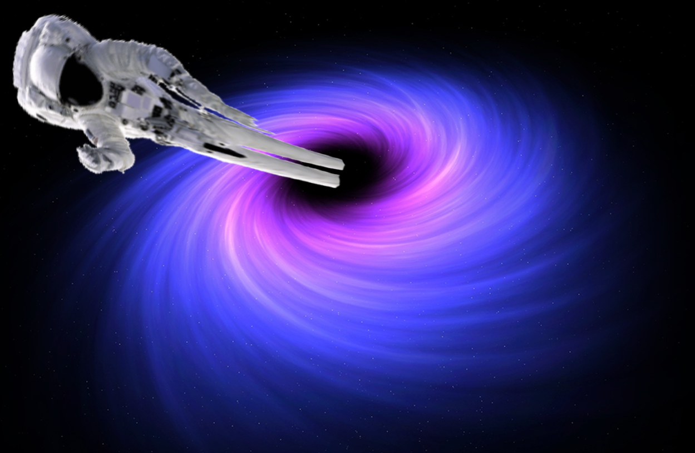

| Se ci casco dentro? |
Sì! finirei spaghettificato... |
 |
| Se il Sole diventasse un buco nero? | No | Se il Sole diventasse un buco nero l'attrazione gravitazionale non cambierebbe. |
| Se un buco nero si avvicinasse dallo spazio? | Forse... |
Ma i buchi neri sono piccolissimi, e lo spazio molto
grande. Non è mai successo in 5 miliardi di anni... |